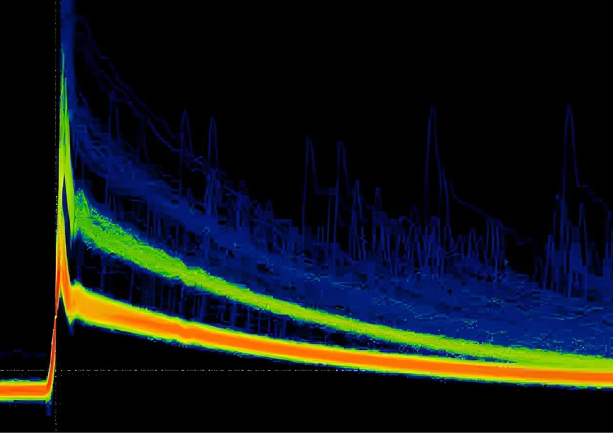
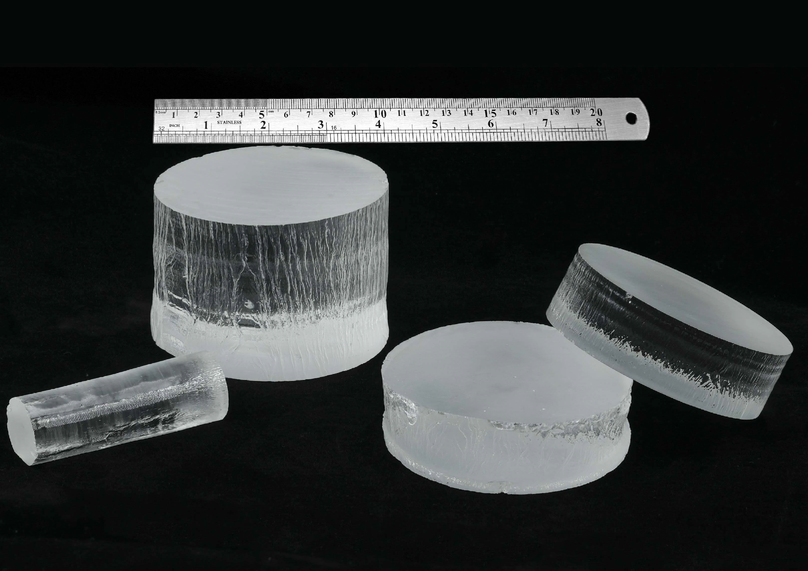
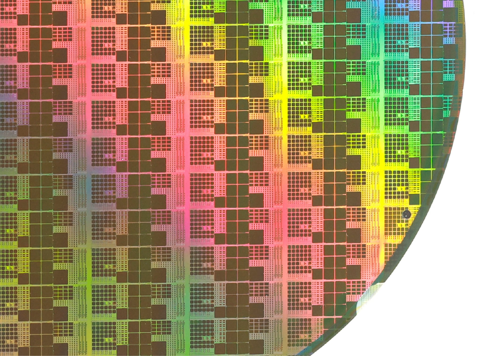
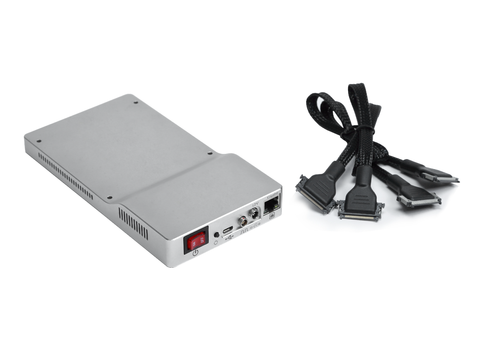
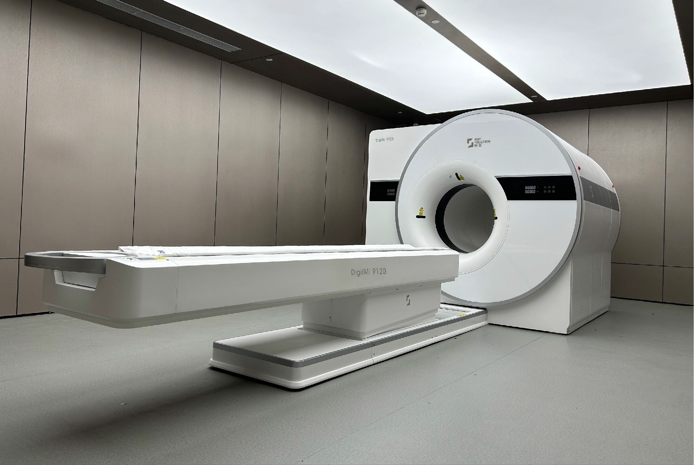
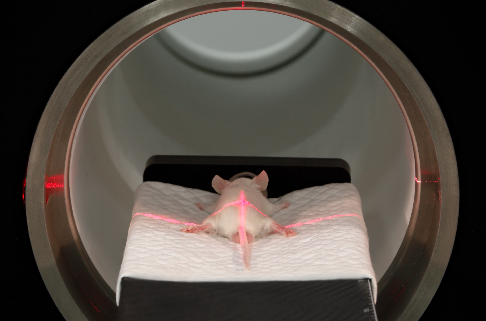

Innovating for Impact

Extending Core Theory
Based on sampling in the amplitude domain and incorporating prior knowledge of the signal, the MVT method can accurately digitize high-speed signals from a massive number of channels using only a handful of voltage threshold comparators.

Strengthening Foundational Materials
It concentrates on cutting-edge issues such as the 4f-4f and 4f-5d energy level transition characteristics of rare-earth elements and the self-trapped emission mechanism of low-dimensional perovskite configurations.

Breaking Through Core Devices
It enables universal pulse acquisition and waveform digitisation while maintaining data-lightweighting, and it surpasses the accuracy limits of multi-parameter measurements—including time, energy and position—through high-precision physical-information reconstruction.

Advancing Key Components
it enables universal pulse acquisition and waveform digitisation while maintaining data-lightweighting, and it surpasses the accuracy limits of multi-parameter measurements—including time, energy and position—through high-precision physical-information reconstruction.

Integrating Complete Systems
Users can freely select and configure detector modules with different performance according to imaging needs, enabling the rapid assembly of various imaging systems such as proton therapy PET and helmet PET.

Exploring Frontier Science
Addressing conventional PET limitations of systemic variability, rigid data-algorithm coupling and weak cross-platform consistency, this framework delivers end-to-end standardized, reproducible workflows from signal capture to physiological quantification.